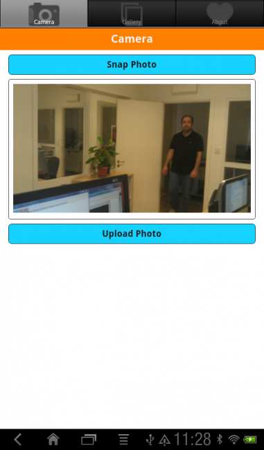
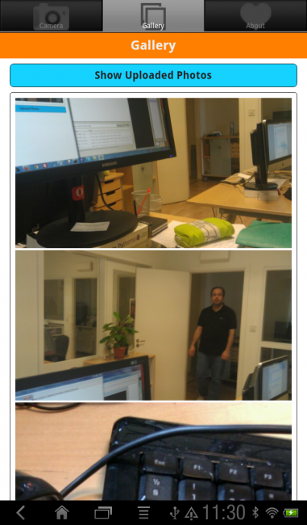

This example application demonstrates the MoSync Wormhole JavaScript Library, in particular its support for file uploads and camera capture. It shows how to use NativeUI from JavaScript, and how to use multiple WebViews that can send mesages to each other.
|  |  |
| Camera Screen (Android) | Gallery Screen (Android) |
This example is included in the MoSync SDK installation in the /examples/html5 folder. For information on importing the examples into your workspace, see Importing the Examples.
This application runs on Android and iOS (Window Phone does not have Capture support yet, but file upload is supported, see Feature/Platform Support).
The PhotoGallery exampel application makes use of a wide range of programming techniques, with file upload and camera capture being the central ones. It also demonstrates how to use WebView Widgets in a NativeUI Tab Screen. For a full discussion of the programing techniques used, see the PhotoGallery Explained article.
The user interface has three tabs, Camera, Gallery and About. Use the Camera screen to snap a picture and upload it to the server. Use the Gallery screen to view uploaded pictures (you don't have to take picture to do this). The About screen contains information about the program.
Please note that the server to which the pictures are uploaded is a test server, which means that it may not have the up time and reliability of a production server. If you find that upload of photos do not work, it may be because the test server is down.
You can put the PHP server script included with the example source code on your own server, and update the application code to upload to that server instead, if you experience problems with the test server.
Please see the PhotoGallery Explained article for a full discussion of the programming techniques used to create this application.
The PhotoGallery example is a good starting point for making applications based on a Tabbed UI with screens programmed in HTML/CSS/JavaScript displayed in WebView widgets. Specifcially, the example demonstrates how to communicate between WebViews using JavaScript.
This application can be used to upload photos to the Internet, which will make them publicly available. MoSync AB takes no responsibility for uploaded photos or any damage the use of this application may cause.